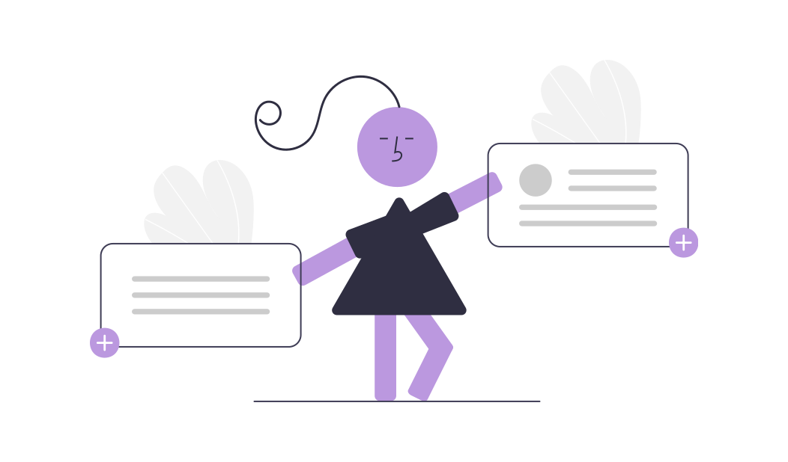

<ion-content mode="md">
  
  <div class="main-container">
    
    <div class="sidemenubtn-container">
      <ion-buttons slot="start">
        <ion-back-button defaultHref="/tasks"></ion-back-button>
        <p>New Task</p>
      </ion-buttons>
    </div>

  </div>

  <div class="roundedtopcard-container animate__animated animate__slideInDown">

    <div class="rep-icon">
      
    </div>

    <div class="tasks-container">
      <p>Title</p>
      <ion-input></ion-input>
      <p>Description</p>
      <ion-textarea></ion-textarea>
      <ion-button>Save</ion-button>
    </div>

  </div>

</ion-content>
